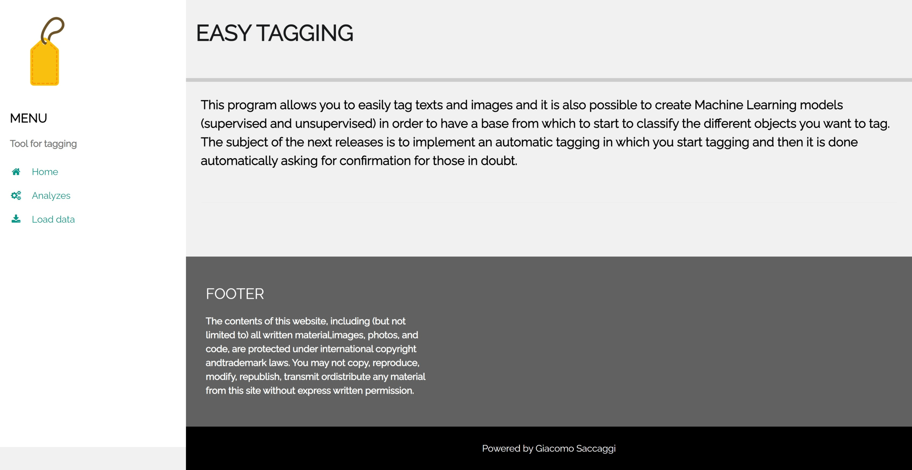
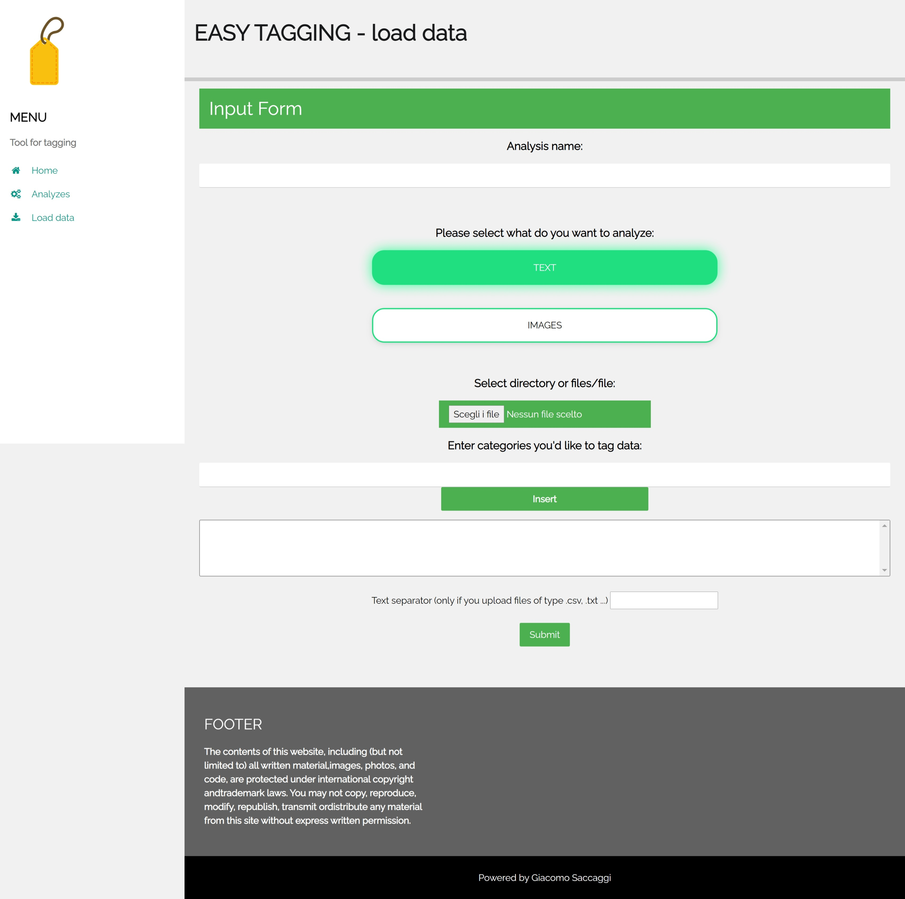
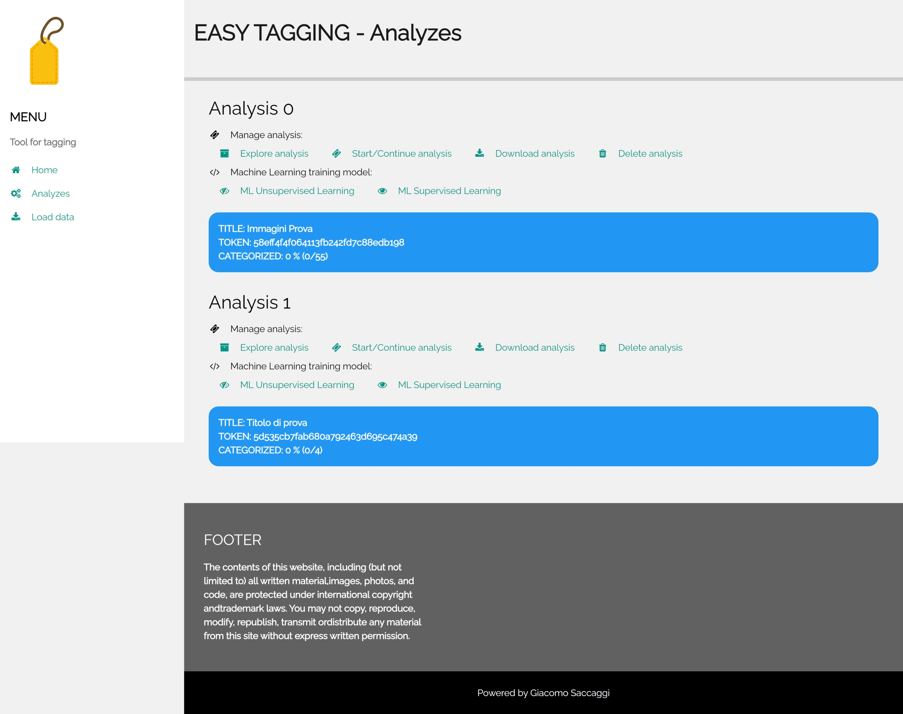
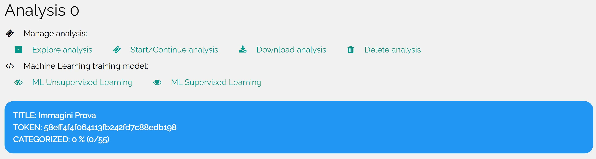

It happens quite often that you want to create a forecasting model, of which you have the data but you have to divide them into categories before you can operate in a supervised way.
The goal of this package is to make tagging procedures easier and offer help from AI to help with tagging. Specifically, the ultimate goal is to implement an automatic tagging in which you start tagging, and then it is done automatically asking for confirmation for those in doubt.
How to install TaggingGS from ZIP file:
pip install https://github.com/GiacomoSaccaggi/TaggingGS/archive/refs/heads/main.zippip install git+https://github.com/GiacomoSaccaggi/TaggingGS.git#egg=TaggingGSpip install ." to install the package locally>>> from tagginggs import run_tagging_app>>> app = run_tagging_app()>>> app.run(port=8080)The front-end part of the package was built with Flask, I recommend if you want to put the app in a container to use Guinicorn to ensure security and not directly flask (follow the procedure explained below).
Afert run proces if you go on "localhost:****" or "ip_url_server:****" where **** it's the port that we select to hosting you'll seen this page:

By going to the "Load data" page, the data loading form exits. The data that can be entered for tagging can be of two natures: text or images. The images can be loaded by clicking on the "select files" button and selecting the files. As regards the texts, there are two loading possibilities: the first allows you to load the texts divided into different .txt files by clicking on the "select files" button and selecting the files; the second allows you to load texts from a single file divided by a separator which is then inserted in the input text below.
For tagging, it is important to define the categories into which you want to divide the data. To do this, enter the category and click on "Insert".
Once the form is completed you can click on submit to complete the upload.

Once the upload is complete, by going to the "Analyzes" page, we find all the uploaded analyzes.

For each analysis, information about loading and how many are analyzed is provided. In addition, there are several buttons that perform different functions related to the analysis in question described below:
